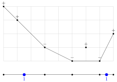

Divisors and Multiplicities under tropical and signed shadows
Trevor Gunn
Part I:
Divisors on Metric Graphs
Divisors, line bundles, linear systems, etc. are connected to projective embeddings.
E.g. $\P^1 \xrightarrow{\O(3)} \P^3$ \[[x:y] \mapsto [x^3 : x^2y : xy^2 : y^3]\]

Divisors, line bundles, linear systems, etc. are connected to projective embeddings.
E.g. $\P^1 \xrightarrow{\O(3)} \P^3$ \[[x:y] \mapsto [x^3 : x^2y : xy^2 : y^3]\]
Can embed graphs in $\R^3$
putting vertices on the TC
$p^3 + px - 2py - 3px^2 + 2xy + py^2 - 2p^3x^3 + px^2y + pxy^2 - p^3y^3 \in \Q_p[x,y]$

Newton polytope/complex
and associated tropical curve

The metric graph associated to a tropicalization is called a skeleton
Lattice length metric

Tropical balancing condition \[ \sum \omega_e \vec{v}_e = \vec0 \]

Can also contract leaf vertices to obtain other skeleta
Going backwards
Baker-Rabinoff
There exist coordinate functions, which lift, such that the resulting tropicalization is an isometry (tropical weights are $1$) on a fixed skeleton.

Baker-Rabinoff
Fixed skeleton—rays have positive weights
G-Jell
There exist coordinate functions, which lift, such that the resulting tropicalization is an isometry on the extended skeleton (considering all the rays).
Components of $\X_{\F_p}$ give valuations on $\X$
Dual graph of $\X_{\F_p}$ is a skeleton
If $f$ is a meromorphic function on $\X^{\mathrm{an}}$ then \[ (x, |\cdot|) \mapsto \log |f(x)| \] is a piecewise linear function.
Part II:
Multiplicities
Arithmetic in the shadows
$\K = \{0 = \{0_K\}, 1 = \{\text{non-zero elts.}\}\}$
(Krasner hyperfield)
Hypersums represent all possible sums among equivalence classes.
E.g. zero + non-zero = non-zero \[0 \boxplus 1 = 1\]
E.g. non-zero + non-zero = zero or non-zero \[1 \boxplus 1 = \{0, 1\}\]
E.g. $f(x) = x^2 + x^4 + x^5 \in \K[x]$ represents a polynomial with non-zero $2, 4, 5$-th coefficients. \[ \mult_1 f = 5 - 2 = 3. \]
\[ \begin{align*} f(x) &\in (x + 1)(x^2 + x^3 + x^4), \\ (x^2 + x^3 + x^4) &\in (x + 1)(x^2 + x^3), \\ (x^2 + x^3) &= (x + 1)x^2. \end{align*} \]
Hyperfield Multiplicity
\[ \begin{align*} \mult_l^H(\varnothing) &= 0 \\ \mult_l^H(\cF) &= 1 + \mult_l^H(\cF : l) \end{align*} \]
For $\cF \subset H[x]$ of bounded degree.\[ (\cF : l) = \{ g \in H[x] : f \in l \cdot g, \text{ for some } f \in \cF \} \]
Arithmetic of signs \[ \S = \{0, 1, -1\} \]
E.g. positive + negative = any sign \[ 1 \boxplus (-1) = \S \]
$\mult^\S_1(f) = $ number of sign changes in the coefficients: $a_0, a_1, a_2, \dots$
Tropical hyperfield (min/plus arithmetic) \[\T = \R \cup \{\infty\}\]
\[ x_1 \boxplus \dots \boxplus x_n = \begin{cases} x_0 & \text{unique min.} \\ [x_0, \infty] & \text{else} \end{cases} \] $x_0 = \min\{x_1, \dots, x_n\}$
Geometric Multiplicities
\[ w(a) = \min\{w_1(a_1) + w_2(a_2) : a_1 + a_2 = a\}. \]

In one variable: always a sum of degree-$1$ cycles.
Enriched Multiplicities
G (for univariate polynomials)
\[ \mult^{H \rtimes \Gamma}_l f = \mult^H_{\In_w l} \In_w f. \]
\[ \mult^{H \rtimes \Gamma}_l f \le \mult^H_{\In_w l} \In_w f. \]
Because if $f \in l \cdot g$ then $\In_w f \in \In_w l \cdot \In_w g$.
Hard part:
Factorizations of $\In_w f \implies$ factorizations of $f$.
(Only works if $f$ is a product of linear factors.)
Other multiplicities (Gross-G)
Relative multiplicity \[ \mult^{\varphi : K \to H}_l \cF = \mult^K_{\varphi^{-1}\{l\}} \varphi^{-1} \cF. \]
Boundary Multiplicity \[ \bmult^H_l \cF = \min_i \left. \mult^H_l \cF \right|_{x_i \gets 0}. \]
Geometric Multiplicity \[ \gmult^{H \rtimes \R}_l f = \max\left\{ a : V(f) = W + aV(l),\; \supp(W) \ge 0 \right\}. \]
Perturbation multiplicity: mixed subdivisions $\implies$ factorizations

Systems of Equations
- Square homogeneous system $f_1 = \cdots = f_n = 0$
- $V = V(f_1, \dots, f_n)$
- $l = u_0x_0 + \cdots + u_nx_n$
Mixed Sparse Resultant
For a dimension $0$ system, there exists a unique-up-to-monomial-factor polynomial $R = R(l, f_1, \dots, f_n)$ such that \[ R \propto \prod_{[a_0 \; : \; \cdots \; : \; a_n] \in V} (a_0u_0 + \dots + a_nu_n). \]
- $A_0, \dots, A_n \subset \Z^n$ finite sets
- coefficient variables $c_{i,a}$ for $a \in A_i$
- $f_i = \sum c_{i,a} x^a$
- $\mathcal{V} = V(f_0, \dots, f_n) \cap (K^*)^n$
Mixed Sparse Resultant
There exists a unique-up-to-monomial-factor polynomial $R = R(A_0, \dots, R_n)$ in the variables $c_{i,a}$ which vanishes iff $\mathcal{V}$ is non-empty.
By dimension counting, we expect this holds on a codimension $1$ set since we have $n + 1$ equations $f_0, \dots, f_n$ in $n + 1$ homogeneous variables $x_0, \dots, x_n$.
Signs of $R$ are not determined by those of $f_i$.
Itenberg-Roy
Fix:
- Newton polytopes $\Delta_1, \dots, \Delta_n$
- signs $s_i : \Delta_i \to \S$
There exist polynomials $f_1, \dots, f_n$ with those supports and signs having exactly $N((\Delta_i, s_i))$ positive common roots.
$N((\Delta_i, s_i))$ is some combinatorial quantity and the theorem is proved via patchworking.
For each mixed cell:
Let $A$ be the matrix containing the above vectors as rows (mod $2$). \[ A = \begin{pmatrix} 1 & 1 \\ 0 & 1 \end{pmatrix} \]
Add a $0$ if the signs differ and a $1$ if they are the same. \[ \hat A = \begin{pmatrix} 1 & 1 & \textcolor{purple}1 \\ 0 & 1 & \textcolor{purple}0 \end{pmatrix} \]
If $\operatorname{rank} A = \operatorname{rank} \hat A$, add $2^{\operatorname{corank} A}$ to $N$.
Gross-G
Can prove I-R using resultants/signed tropical hypersurfaces.
Li-Wang
The I-R lower bound is not sharp.
For a particular $(3,3)$ curve and a line, I-R's formula gives $N = 2$ but there is an example where there are $3$ positive roots.
Gross-G
In the Li-Wang example, $\bmult R = 3$.